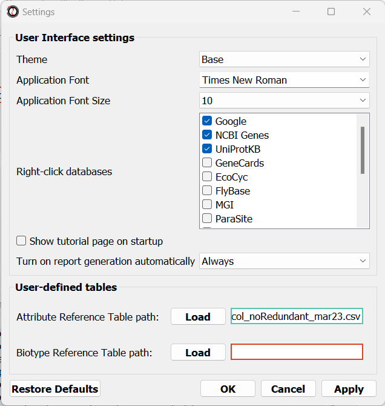

The RNAlysis main window is built to allow you to quickly and easily filter, process, analyze, and summarize data tables in general, and RNA sequencing data in particular.
The filtering module is tab-based - each tab contains a single table or gene set. You can work on multiple gene sets and tables in parallel, switching freely between tabs as you would in an internet browser.
RNAlysis supports different types of data tables. You will learn more about those table types in the next section.
Analysis of all types of data tables (Count matrices, differential expression tables, fold change tables, and other generic tables) works on the same principles,
and many of the same functions and features are relevant to all types of data tables. Each of those types also has specific filtering, analysis and visualisation functions unique to it.
In this section we will look into the general principles of working with data tables.
We will start by opening the RNAlysis GUI. Type the following command into the terminal through which you installed RNAlysis:
rnalysis-gui
To load a table, in the main window, click on the “Load” button and choose a table’s csv file from your computer.
We will then use the drop-down menu to change our table type from “Other” to “Count matrix”. This will allow us to later on use analysis methods that are dedicated to count matrix-style datasets.
Once we picked a table type, a new option will appear, allowing us to specify whether our table was pre-normalized.
This is not a mandatory step, but if we don’t do it, RNAlysis will warn us whenever we run analyses that expect normalized values.
Different types of tables offer different types of options. For example, when loading differential expression tables, you can specify the names of the columns containing log2FolcChange values and adjusted p-values;
and for any table you can specify the names of specific columns that you want to drop from the table.
Finally, we can click the “start” button to actually open our table on RNAlysis.
The window will now display a preview of our table, as well as a short summary of our table’s content (table name, table type, number of rows and columns).
To save time and effort, you can load multiple tables into RNAlysis at once.
To do that, open the “File” menu, hover on “New…” and choose “Multiple new tables”.
You can then pick multiple table files to load into RNAlysis.
When you are done picking files, click on the “OK” button.
You will then be prompted to set each table’s type, parameters, and optionally an alternative name.
Once you are happy with those parameters, click on the “OK” buttons to load all tables into RNAlysis.
Working with multiple tables and organizing your workspace
The main window of RNAlysis works much like an internet browser - you can load multiple tables in the same session, and each table will be displayed in its own tab.
You can switch between tabs by clicking on a different tab’s label, and you can apply (or undo) functions to each table separately and independently:
To see the full name of a tab, you can hover over it’s label with your cursor.
Each tab will have a colored icon, showing the type of that table (‘C’ for count matrices, ‘DE’ for differential expression tables, ‘FC’ for fold-change tables, ‘T’ for other tables, and ‘S’ for gene sets).
To make it easier for you to analyze multiple tables at the same time, you can change the icon of a specific tab by right-clicking on it and choosing a new color.
Moreover, you can sort your tables by name, type, or creation time, by right-clicking on tab and choosing a sorting method.
Let’s go through three different ways to view a glimpse of the table we just loaded.
First, as we saw earlier, each tab will display a small preview of the table loaded into it. We can also see the name, the shape, (how many rows and columns), and the type of the table.
Second, if you want to see the entire table, you can click on the ‘View full table’ button to see your table in its entirety:
Finally, if your table is particularly big, or your system doesn’t have enough memory to show it all at once, you will need to use more sophisticated methods to get a glimpse of your data
To view a glimpse of the table we can use the ‘head’ and ‘tail’ functions.
By default ‘head’ will show the first 5 rows of the file, and ‘tail’ will show the last 5 rows,
but you can specify a specific number of lines to show.
Click on the ‘Summarize’ button near the bottom of the screen, and then choose either the ‘Table Head’ or the ‘Table Tail’ functions, and then click on the ‘Apply’ button at the bottom of the screen.
A new window will open, showing a preview of the top/bottom of the table.
Now we can start filtering the rows in the table we loaded according to parameters of our choosing.
The filtering operations we apply are going to affect the table in the current tab. Those operations do not affect the original csv file we loaded, but its representation within the RNAlysis program.
If we want to save the changes we made we can do that by clicking on the “Save table” button, and choosing a name for the new, filtered table.
RNAlysis contains a large variety of filtering functions. You can view them and choose one by clicking on the “Filter” button, and choosing a function from the drop-down list:
If we now look at the shape of the table, we will see that some rows have been filtered out of the table. This information will also appear in the log textbox at the bottom of the screen.
RNAlysis will display a summary of each applied operation in this log textbox, as well as warnings and other information.
When you work with multiple tables at the same time, each tab will have its own log textbox, and log messages should appear in the tab that’s relevant to them.
Different functions in RNAlysis have different parameters. Those parameters determine exactly how those functions are applied.
For example, the function ‘Filter by statistical significance’ for differential expression tables can filter out genes which are not significantly differentially expressed.
You can determine exactly what the threshold for statistical analysis is, by setting the ‘alpha’ parameter.
By default, when you apply filtering operations (or other table-modifying operations) on data tables, they are performed in-place - meaning the table is modified in its original tab.
However, if we don’t want to modify the original tab, we can choose not to apply the operation in-place, and instead open a copy of the table in a new tab, applying the operation to that copy.
This will leave the original table unchanged - so you can have two copies of the table and look at them side-by-side, or use both the filtered and unfiltered versions later down the line.
To determine whether filtering (or other table-modifying operations) will be applied in-place or not, you can set the “inplace” parameter of those functions to True (to apply in-place) or “False” (to apply in a new tab):
Another useful parameter common to all filtering operations is to perform an Opposite filter. When we specify the parameter ‘opposite’ as True, the filtering function will be performed in opposite.
This means that all of the rows that were supposed to be filtered out are kept in the table, and the rows that were supposed to be kept in the table are instead filtered out.
This is useful when you want to find a group of genes that doesn’t match a specific criteria. For example - you could use the ‘Filter by statistical significance’ function with the opposite parameter set to True,
in order to extract the list of genes which are NOT significantly differentially expressed.
Any table-modifying operation you apply in-place can be undone with a click of a button, by using the Command History pane:
Using an Attribute Reference Table to filter tables
An Attribute Reference Table contains various user-defined attributes (such as ‘genes expressed in intestine’, ‘epigenetic genes’ or ‘genes that have paralogs’) and their value for each genomic feature.
You can read more about the Attribute Reference Table format and loading an Attribute Reference Table in the Set and load a Reference Table section.
Using the function “Filter by user-defined attribute”, you can filter your tables by one of the user-defined attributes in your Attribute Reference Table.
Using a GTF file or Biotype Reference Table to filter tables or summarize tables
If you want to filter the genes in your tables by their biotypes (protein coding gene, pseudogene, lncRNA, etc), or summarize their biotypes, you can do that using either a GTF file or a Biotype Reference Table.
If you use a GTF file, your GTF file must contain information about each genomic feature’s biotype, and the gene ID type of your table should match that of your GTF file.
Alternatively, if you don’t have such a GTF file, or you want to define the biotypes of your genomic features differently, you can use a custom-made :term:’Biotype Reference Table’.
To filter a table based on the biotypes of the genomic features in it, use either the “Filter by feature biotype (based on a GTF file)” function or the “Filter by feature biotype (based on a reference table)” function.
You can also view the number of genomic features belonging to each biotype using either the function “Summarize feature biotypes (based on a GTF file)” or the function “Summarize feature biotypes (based on a reference table)”.
Differential Expression Tables are data tables describing the results of differential expression analysis. Most importantly, these tables contain data about the log2 fold change of each gene, and the adjusted p-value for each gene (meaning, whether it is statistically significant in the DE analysis).
RNAlysis has special functions implemented for differential expression data.
You can either load pre-existing Differential Expression Tables into RNAlysis, or run differential expression analysis on a count matrix through RNAlysis using the built-in DESeq2 Differential Expression tool.
Differential expression analysis using DESeq2 through RNAlysis
Before proceeding with this step, make sure you have installed R on your computer.
You don’t have to install DESeq2 on your own - RNAlysis can install it for you, as long as you have installed the R language on your computer already.
To open the Differential Expression window, choose an RNAlysis tab with one of the scaled count tables, click on the “General” tab, and from the drop-down menu below select “Run DESeq2 differential expression”:
The Differential Expression window should now open. On the left side of the window, set the path of your R installation (or keep it on ‘auto’ if you have previously added R to your computer’s PATH).
Next, you need to define a design matrix for each of our count tables.
The first column of the design matrix should contain the names of the samples in the count table.
Each other column should contain a variable to be added to the experimental design formula of the dataset. For example: experimental condition, genotype, or biological replicate/batch.
For example, the a design matrix for an experiment with two experimental conditions and three biological replicates could look like this:
Name
condition
batch
Ctrl1
Ctrl
A
Ctrl2
Ctrl
B
Ctrl3
Ctrl
C
Osm1
Osm
A
Osm2
Osm
B
Osm3
Osm
C
You can create your design matrix in a program like Microsoft Excel or Google Sheets, and then save it as a CSV or TSV file.
Once you have prepared your design matrix, choose that file from the DESeq2 window and click on the “Load design matrix” button:
The right side of the window will now update, allowing you to choose which pairwise comparisons you want to run, based on your design matrix.
You can make as many pairwise comparisons as you want, each comparing two levels of one of the variables in the design matrix.
Note that the order of conditions in the comparison matters - the first condition will be the numerator in the comparison, and the second condition will be the denominator.
Any csv file that contains differential expression analysis data with log2 fold change and adjusted p-values can be analyzed as Differential Expression Tables in RNAlysis.
By default, RNAlysis assumes that log2 fold change values will be specified under a ‘log2FoldChange’ column, and adjusted p-values will be specified under a ‘padj’ column (as is the default in differential expression tables generated by DESeq2):
baseMean
log2FoldChange
lfcSE
stat
pvalue
padj
WBGene00000021
2688.044
3.329404
0.158938
20.94783
1.96E-97
1.80E-94
WBGene00000022
365.813
6.101303
0.291484
20.93189
2.74E-97
2.40E-94
WBGene00000023
3168.567
3.906719
0.190439
20.51433
1.60E-93
1.34E-90
WBGene00000024
221.9257
4.801676
0.246313
19.49419
1.23E-84
9.82E-82
WBGene00000025
2236.186
2.477374
0.129606
19.11463
1.91E-81
1.46E-78
WBGene00000026
343.649
-4.03719
0.219781
-18.3691
2.32E-75
1.70E-72
WBGene00000027
175.1429
6.352044
0.347777
18.26471
1.58E-74
1.12E-71
WBGene00000028
219.1632
3.913657
0.217802
17.96885
3.42E-72
2.32E-69
Loading a table that follows this format as a Differential Expression Table works similarly to other table types. The only difference is that when loading the table, you need to specify the table type as ‘Differential expression’.
If your differential expression table does not follow this format, you can specify the exact names of the columns in your table that contain log2 fold change values and adjusted p-values.
The fields for this parameters will appear after setting the table type to ‘Differential expression’.
Functions unique to Differential Expression Tables (such as ‘Filter by statistical significance’ and ‘Filter by fold change magnitude’) will not work properly if the log2 fold change column and adjusted p-value column are not specified correctly.
Filtering operations unique to Differential Expression tables
There are a few filtering operations unique to differential expression tables. Those include ‘Filter by statistical significance’, which removes statistically-insignificant genes according to a specified threshold;
‘FIlter by log2 fold change magnitude’, removes rows whose absolute value log2 fold change is below the specified threshold;
‘Filter by fold change direction’ which removes either up-regulated (positive log2 fold change) or down-regulated (negative log2 fold change) genes;
and ‘Split table by fold change direction’ which returns two new tables: one containing only up-regulated genes and one containing only down-regulated genes.
Data visualization and exploratory data analysis with Differential Expression Tables
Differential Expression Tables support methods for visualization and exploratory analysis of differential expression data.
With ‘Volcano plot’, you can observe the direction, magnitude, and significance of differential expression within your data:
Count matrices are a type of table that describe expression level of different genes/genomic features under different conditions/samples.
RNAlysis is capable of visualizing, filtering, normalizing, and clustering of count matrices.
Data can be imported into a CountFilter objects either from a csv file, or directly from text output files generated by HTSeq-count as explained below.
In principle, any csv file where the columns are different conditions/replicates and the rows include reads/normalized reads per genomic feature can be used as input for CountFilter. However, some count matrix functions (such as ‘normalize_to_rpm_htseqcount’) will only work on HTSeq-count output files, and other unintended interactions may occur.
Generating a count matrix from a folder of HTSeq-count output .txt files
HTSeq-count receives as input an aligned SAM/BAM file. The native output of HTSeq-count is a text file with feature indices and read-per-genomic-feature, as well as information about reads that weren’t counted for any feature (alignment not unique, low alignment quality, ambiguous, unaligned, aligned to no feature).
An HTSeq-count output file would follow the following format:
WBGene00000001
376
WBGene00000002
1
WBGene00000003
1
WBGene00000004
18
WBGene00000005
1
WBGene00000006
3
WBGene00000007
6
WBGene00000008
0
WBGene00000009
1
WBGene00000010
177
__no_feature
32
__ambiguous
12
__too_low_aQual
1
__not_aligned
121
__alignment_not_unique
100
When running HTSeq-count on multiple SAM files (which could represent different conditions or replicates), the final output would be a directory of .txt files.
RNAlysis can parse those .txt files into two tables: in the first each row is a genomic feature and each column is a condition or replicate (a single .txt file),
and in the second table each row represents a category of reads not mapped to genomic features (alignment not unique, low alignment quality, etc).
This can be done by opening the “File” menu, entering the “New…” menu, and clicking on the “New table from folder” action:
Then, select the table containing your HTSeq-count text files.
RNAlysis will then offer you to automatically normalize your data to reads-per-million. After you make your choice, RNAlysis will load the table it created into a new tab (normalized or raw, depending on your choice earlier).
If you already have a count matrix file in csv or tsv format, you can directly load this table into RNAlysis as you would any other table.
If you’re loading a count matrix that was already normalized, make sure to set the ‘is_normalize’ parameter to True.
A valid count matrix would follow the following format:
There are a few filtering operations unique to count matrices. Those include two functions that can removes genes with low expression - either by removing rows with summed expression below a specified threshold, or by removing rows whose expression is below a specified threshold in all columns.
RNAlysis can normalize count matrices with either pre-existing normalization methods RNAlysis supplies, or with user-defined scaling factors. As mentioned earlier, you can also load pre-normalized count matrices into RNAlysis.
RNAlysis offers the following normalization methods:
Relative Log Expression (RLE - ‘normalize_rle’), used by default by R’s DESeq2
Trimmed Mean of M-values (TMM - ‘normalize_tmm’), used by default by R’s edgeR
Quantile normalization, a generalization of Upper Quantile normalization (UQ - ‘normalize_quantile’), used by default by R’s Limma
Median of Ratios Normalization (MRN - ‘normalize_mrn’)
Reads Per Million (RPM - ‘normalize_to_rpm’)
To normalize a count matrix with one of these functions, click on the ‘Normalize’ button, pick one of the normalization functions from the drop-down menu, and click ‘Apply’.
To normalize a count matrix with user-generated scaling factors, you would need a separate csv table with the scaling factor for each sample:
sample1
sample2
sample3
sample4
0.96
1
0.78
1.23
We would then click on the ‘Normalize’ button, pick ‘Normalize with pre-calculated scaling factors’ from the drop-down list, load our scaling factor table, and click “Apply” at the bottom of the screen.
The resulting count matrix will be normalized with the scaling factors (dividing the value of each column by the value of the corresponding scaling factor).
To normalize a count matrix that originated from HTSeq-count to reads per million, we need a csv table with the special counters that appear in HTSeq-count output:
sample1
sample2
sample3
sample4
__ambiguous
37
12
145
77
__no_feature
9468
11354
14009
30287
__alignment_not_unique
108
290
557
893
__too_low_aQual
0
5
12
9
__not_aligned
109853
277653
88653
96012
We would then click on the ‘Normalize’ button, pick ‘Normalize to reads-per-million (RPM) - HTseq-count output’ from the drop-down list, load our special counter table, and click “Apply” at the bottom of the screen.
The resulting count matrix will be normalized to RPM with the formula (1,000,000 * reads in cell) / (sum of aligned reads + __no_feature + __ambiguous + __alignment_no_unique)
RNAlysis supports a wide variety of clustering methods, which can group genes/genomic features into clusters according to their relative expression patterns across different samples.
When clustering genomic features in a count matrix, RNAlysis will make a copy of the table and split the rows in it into different sub-tables, one new table for each cluster found in the analysis.
These tables will then be opened in new tabs, allowing you to save them or analyze them further.
RNAlysis will also generate an expression plot, depicting the average relative expression pattern within each cluster, as well as the variance of expression.
Expression plots of the resulting clusters can be generated in one of multiple styles:
Example expression plot of clustering results with plot_style=’all’
Example expression plot of clustering results with plot_style=’std_area’
Example expression plot of clustering results with plot_style=’std_bar’
The expression plots can also by split into separate graphs, one for each discovered cluster, or plotted all on the same graph.
All clustering methods in RNAlysis which require you to specify the expected number of clusters (such as K in K-Means clustering) allow multiple ways of specifying the number of clusters you want to find.
You can specify a single value (such as 5):
You can specify a list of values to be used, and RNAlysis will generate a clustering result for each of those values (for example: 5, 8, 11):
Finally, you can use a selection algorithm to estimate a good number of clusters for your dataset. RNAlysis supports both the Silhouette method and the Gap Statistic method:
To help in evaluating the result of these selection algorithms, RNAlysis will also plot a summary of their outcome:
K-means is a clustering method which partitions all of the data points into K clusters by minimizing the squared eucliean distance between points within each cluster.
The algorithm is initiated by picking a random starting point, and therefore the exact clustering results can change between runs.
The main advantage of K-means clustering is its simplicity - it contains one main tuning parameter (K, the expected number of clusters in the data).
The K-medoids method is very similar to K-means. The main difference between the two is the way they define clusters and the distances between them:
K-medoids picks one data point as the ‘center’ (medoid) of each cluster.
In addition, K-medoids attempts to minimize the sum of dissimilarities within each cluster, instead of minimizing squared euclidean distance.
Due to these differences, the K-medoids algorithm supports the use of distance metrics other than eucliean distance through the metric parameter.
K-medoids clustering in RNAlysis supports the following distance metrics:
Hierarchical clustering (or agglomerative clustering) is clustering method which aims to build a hierarchy of clusters.
In agglomerative hierarchical clustering, each data points starts in its own clusters.
The clustering algorithm then uses a distance metric (a measure of distance between pairs of data points)
and a linkage criterion
(determines the distance between sets of data points as a function of the pairwise distances between observations)
to group merge data points into clusters, and then further group those clusters into larger clusters based on their similarity.
Eventually, all of the observations are connected into a hierarchical tree.
We can decide to ‘cut’ the tree at any height in order to generate the final clustering solution.
This can be done by either specifying the estimated number of clusters like in K-means,
or by specifiying a distance threshold above which clusters will not be merged.
Hierarchical clustering in RNAlysis supports the following distance metrics:
HSBSCAN makes relatively few assumptions about the data - it assumes that the data contains noise, as well as some real clusters which we hope to discover.
Unlike most other clustering methods, HDBSCAN does not force every data point to belong to a cluster. Instead, it can classify data points as outliers, excluding them from the final clustering solution.
HDBSCAN does not require you to guess the number of clusters in the data. The main tuning parameter in HDBSCAN is minimum cluster size (min_cluster_size), which determines the smallest “interesting” cluster size we expect to find in the data.
HDBSCAN supports additional tuning parameters, which you can read more about in the HDBSCAN documentation:
HDBSCAN in RNAlysis supports the following distance metrics:
CLICOM is an ensemble-based clustering algorithm (see https://doi.org/10.1016/j.eswa.2011.08.059 ).
The CLICOM algorithm incorporates the results of multiple clustering solutions, which can come from different clustering algorithms with differing clustering parameters, and uses these clustering solutions to create a combined clustering solution.
CLICOM offers multiple advantages over more traditional clustering methods:
The ensemble clustering approach allows you to combine the results of multiple clustering algorithms with multiple tuning parameters, potentially making up for the weaknesses of each individual clustering method, and only taking into account patterns that robustly appear in many clustering solutions.
Unlike most other clustering methods, CLICOM does not have to force every data point to belong to a cluster. Instead, it can classify data points as outliers, excluding them from the final clustering solution.
CLICOM does not require you to guess the final number of clusters in the data. The main tuning parameter in HDBSCAN is the evidence threshold (evidence_threshold).
RNAlysis offers a modified implementation of CLICOM. This implementation of CLICOM supports a few tuning parameters, in addition to the clustering solutions themselves:
Moreover, ths modified version of the algorithm can cluster each batch of biological/technical replicates in your data separately, which can reduce the influence of batch effect on clustering results, and increases the accuracy and robustness of your clustering results.
evidence_threshold: a higher evidence threshold leads to fewer, large clusters, with fewer features being classified as outliers.
cluster_unclustered_features: if True, CLICOM will force every feature to belong to a discovered cluster. Otherwise, features can be classified as noise and remain unclustered.
min_cluster_size: determines the minimal size of a cluster you would consider meaningful. Clusters smaller than this would be classified as noise and filtered out of the final result, or merged into other clusters (depending on the value of cluster_unclustered_features).
replicates_grouping: allows you to group samples into technical/biological batches. The algorithm will then cluster each batch of samples separately, and use the CLICOM algorithm to find an ensemble clustering result from all of the separate clustering results.
In addition to the commonly-used distance metrics, such as euclidean distance and spearman correlation, RNAlysis offers a selection of distance metrics that were either developed especially for transcriptomics clustering, or found to work particularly well for transcriptomics clustering.
Those methods include:
1. jackknife distance - a modified Pearson dissimilarity coefficient.
Instead of measuring the linear correlation between expression levels of two genes, you measure the linear correlation coefficient N times (where N is the number of samples in the data), every time excluding a single sample from the correlation, and then taking the smallest correlation coefficient found.
The correlation score is then converted into a dissimilarity score.
This distance metric can detect linear correlation, like Pearson correlation, but is less sensitive to extreme values.
(see Heyer, Kruglyak and Yooseph 1999).
2. YR1 distance - a distance metric developed especially for time-series gene expression data.
This distance metric combines the Pearson dissimilarity, along with the positon of the minimal and maximal values of each sample, and the agreement of their slopes. These three values are combined into a single distance score.
This means that the YR1 metric captures more accurately the shape of the expression pattern of each gene, and ranks genes with similar expression patterns as more similar to one another.
(see Son and Baek 2007).
3. YS1 distance - a distance metric developed especially for time-series gene expression data.
This distance metric combines the Spearman dissimilarity, along with the positon of the minimal and maximal values of each sample, and the agreement of their slopes. These three values are combined into a single distance score.
This means that the YS1 metric captures more accurately the shape of the expression pattern of each gene, and ranks genes with similar expression patterns as more similar to one another.
(see Son and Baek 2007).
Data visualization and exploratory data analysis of count matrices
RNAlysis offers multiple methods for visualization and exploratory analysis of count data.
With Pairplot, you can get a quick overview of the distribution of counts within each sample, and the correlation between different samples:
A Pipeline allows you to group together multiple functions from the main RNAlysis module (such as filtering, splitting, normalizing, visualizing, summarizing, or transforming your data), and apply this group of functions to tables of your choice in a specific and consistent order.
Pipelines make your workflow easier to read and understand, help you avoid repetitive actions, and makes your analyses more reproducible and less error-prone.
To create a new empty Pipeline open the Pipelines menu and click on “New Pipeline”:
In the new window that opened, you can name the Pipeline, and choose the type of table you want to apply the Pipeline to:
Pipelines for specific types of tables will allow you to use functions specific to that table type.
If you’re not sure what type of table to apply your Pipeline to, just choose “Other” - your Pipeline will then be applicable to any table type.
After choosing a name and table type, click on the “Start” button to create the Pipeline.
The window will now update to show a preview of the new (empty) Pipeline:
At this point, you can start adding functions to the Pipeline.
Adding functions to a Pipeline works very similarly to applying functions to tables.
Click on one of the 5 function categories (such as “Visualization”), pick a function, set its parameters, and click on the “Add to Pipeline” button at the bottom of the screen:
After adding a function to the Pipeline, the Pipeline overview will update to show the function added to it, and this is displayed in the log textbox as well.
The order in which you add functions to the Pipeline is the order in which they will be applied.
If a function at some point in the Pipeline generated multiple new tables (for example - a clustering function returning multiple clusters, or a function splitting your data table into 2 separate tables),
each downstream function will be applied to each new table separately.
Note that the “inplace” parameter will be missing from all functions you add to the Pipeline. This is done on purpose - whenever you apply a Pipeline to a table, you can decide whether you want to apply it in-place or not.
If you want to remove functions from a Pipeline, you can click on the “Remove last function” button, which will remove the last function added to the Pipeline.
When you are happy with your Pipeline, you can click on the “save Pipeline” button to save it in the current RNAlysis session, and on the “Export Pipeline” button to export the Pipeline to your computer, allowing you to load it into any RNAlysis session and share it with others.
You can always edit or delete a previously-saved Pipeline via the Pipelines menu.
If you have previously exported a Pipeline, or you want to use a Pipeline that someone else exported, you can import Pipeline files into any RNAlysis session.
RNAlysis Pipelines are saved as YAML (.yaml) files. Those files contain the name of the Pipeline, the functions and parameters added to it, as well as some metadata such as the time it was exported.
To import a Pipeline into RNAlysis, open the Pipelines menu, click on “Import Pipeline…”, and select your Pipeline file.
Once you have created or imported a Pipeline, you can apply it to any number of data tables in your RNAlysis session.
To apply a Pipeline, open the “Pipelines” menu, hover on the “Apply Pipeline” sub-menu, and pick the Pipeline you want to apply:
Now, you will be prompted on whether you want to apply this Pipeline inplace or not.
Note that if your Pipeline contains splitting functions (functions that always return new tables, and cannot be applied inplace - e.g. clustering functions), you will not be able to apply your Pipeline inplace.
Finally, you will be prompted to choose the tables to apply your Pipeline to.
You can apply your Pipeline to a single data table, or to multiple data tables.
Note that a Pipeline can only be applied to tables matching it’s type (unless the Pipeline table type is “Other”, in which case it can be applied to any table).
The Pipeline will be applied to all tables you selected one-by-one.
Note that Pipelines applied in-place can be undone through the “Command History” pane, just like any of the table-modifying function in RNAlysis.
The RNAlysis Gene Sets module can be used to run various types of enrichment analyses, including Gene Ontology (GO), KEGG pathways, and enrichment for user-defined attributes. The module also lets you apply set operations (union, intersection, etc) to your gene sets and tables.
In addition to loading and analyzing data tables, RNAlysis can load and process gene sets.
A gene set is essentially a list of gene names/IDs with a specific name.
To import a gene set into RNAlysis, open the Gene Sets menu, and click on “Import Gene Set…”:
You can then pick either a text file containing gene names/IDs (one gene ID per line), or a data table where the first column contains gene names/IDs.
RNAlysis will then load this gene set into RNAlysis:
Similarly to data tables, RNAlysis will show you the number of features in the gene set, show you a preview of the gene set, and allow you to view the full gene set or rename it.
If you want to load multiple gene sets at once, you can use the “Import Multiple Gene Sets…” action instead of “Import Gene Set…”.
Many online data-mining and data-analysis services require you to supply a list of gene names/IDs.
You make it easier to integrate those tools into analyses you perform with RNAlysis, you can easily copy a list of gene IDs from any RNAlysis table or gene set.
To copy a list of gene IDs from an existing table/gene set in RNAlysis, go to that table/gene set’s tab, open the “Gene Sets” menu, and click on “Copy Gene Set”:
Alternatively, you can use the “Ctrl+C” shortcut to copy a list of gene names/IDs from the currently selected table/gene set.
RNAlysis allows you to visualize the intersections between your gene sets and tables using Venn Diagrams and UpSet Plots.
To do that, open the “Gene sets” menu, and click on “Visualize Gene Sets…”:
A new window will open.
On the left side of the window, you can choose which data tables/gene sets you want to visualize.
You can pick two or more items to visualize.
Next, choose the type of graph you want to generate.
RNAlysis* supports Venn Diagrams for 2-3 gene sets, and UpSet plots for any number of gene sets.
After choosing a type of graph, the window will now update and display various parameters to modify your graph, and a preview of the graph on the right:
You can change these plotting parameters to modify the graph - for example, to change the colors of the Venn circles, the title, or set whether or not our plot will be proportional to the size of the sets and their intersections.
Once you are happy with the plot preview, click on the “Generate graph” button to create a large version of the graph that you can export and share.
Performing set operations on multiple tables and gene sets
RNAlysis can use set operations such as union, intersection, difference and symmetric difference to combine the gene IDs from multiple data tables and gene sets.
Those set operations can be applied to any type and number of tables, and can combine tables/gene sets of different types.
You can, for example, look at the intersection of gene IDs in a differential expression table, a count matrix, and a gene set.
To apply set operations, open the “Gene sets” menu and click on “Set Operations…”:
You will now see a simplified Venn Diagram depicting the gene sets/tables you chose.
If you chose more than three gene sets, RNAlysis will instead draw an UpSet Plot, to make it easier to read.
You can now proceed to extract the subset you are interested in.
You can do this in one of two different ways, which we will examine now.
Firstly, you can choose a set operation from the multiple choice list: union, intersection, majority-vote intersection, difference, or symmetric difference.
Like filtering operations, some set operations (such as intersection and difference) can be applied ‘inplace’, filtering down an existing table instead of returning a new gene set.
If you pick one of those operations, a drop-down menu will now appear, prompting us to pick the primary gene set in this operation.
RNAlysis wants to know what is your “primary set” for this set operation - meaning, if you were to apply it inplace, which table should it be applied to?
your choice will only matter if we apply this set operation inplace.
Notably, the set operation “difference” is a directional operation - meaning, difference between sets A and B is not the same is the difference between sets B and A.
In the case of this set operation in particular, your choice of primary set will also affect the results of the set operation itself, whether or not you apply it inplace.
Once you pick a set operation and optionally a primary set, the subset representing the result of the set operation between your gene sets/tables will now highlight.
At this point, you can also modify optional parameters that appear on the window.
Once you are happy with your choice, click on the “Apply” button to extract your gene set of interest. It will open in a new tab:
The second method to extract gene sets of interest is by directly picking them from the simplified Venn Diagram manually.
To do that, simply click on the subsets you are interested in on the interactive Venn Diagram:
Click on a subset to select it, and click on it a second time to de-select it.
Once you have selected all of the relevant subsets, click the “Apply” button to extract them.
The gene IDs/names in the gene set/table you chose will be the test set of your enrichment analysis.
Next, you can define the background set for your enrichment analysis.
In enrichment analysis, we test whether our set of genomic features is enriched/depleted for a certain attribute, in comparison to a more generalized set of genomic features that we determined as ‘background’.
This could be the set of all protein-coding genes, the set of all genomic features that show expression above a certain threshold, or any other set of background genes which you deem appropriate. Importantly, the background set must contain all of the genes in the enrichment set.
Defining a background set is required for classical enrichment analysis. However, if you do not want to compare your gene set of interest to a background set, you can use a single-set (background-free) enrichment test.
You can read more about these in the Performing single-set enrichment analysis (enrichment without a background set) section of the user guide.
To define the background set, simply choose an existing table or gene set from the drop-down menu. All of the genes/genomic features in that table will be used as the background set.
If some of the features in the background set or the enrichment set do not have any annotations associated with them, they will be ignored when calculating enrichment.
Enrichment analysis can be done using different types and sources of annotations: Gene Ontology (GO), Kyoto Encyclopedia of Genes and Genomes (KEGG) pathways, user-defined categorical attributes, or user-defined non-categorical attributes.
You can select the annotation source from the top of the enrichment window:
Once you choose an annotation source for enrichment, new options and parameters will appear.
We will now go over these four different annotation sources, and how enrichment analysis works for each of them.
Using the enrichment window, you can perform enrichment analysis for Gene Ontology terms (GO enrichment).
You can read more about Gene Ontology on the Gene Ontology Consortium website.
Define the correct organism and gene ID type for your dataset
Since GO annotations refer to specific gene products, which can differ between different species, RNAlysis needs to know which organism your dataset refers to.
The organism can be specified as either the organism’s name, or the organism’s NCBI Taxon ID (for example: 6239 for Caenorhabditis elegans).
It is recommended to manually determine your organism’s NCBI Taxon ID to avoid mischaracterization of annotations.
However, if you are not sure, RNAlysis will attempt to automatically determine the correct organism by default, based on the gene IDs in your FeatureSet.
Furthermore, since different annotations use different gene ID types to annotate the same gene products (such as UniProtKB ID, Entrez Gene ID, or Wormbase WBGene), RNAlysis can translate gene IDs from one gene ID type to another.
In order to do that, you need to specify which gene ID type your dataset uses. It is recommended to manually determine which gene ID type your data set uses, but if you are not sure, RNAlysis will attempt to automatically determine the correct gene_id_type by default.
Note that if you set both organism and gene_id_type to ‘auto’, finding a good value for both may take a particularly long time.
Significance testing for GO enrichment analysis can be done using either the Hypergeometric Test, Fisher’s Exact Test, or a randomization test.
The hypergeometric test is defined as: Given M genes in the background set, n genes in the test set, with N genes from the background set belonging to a specific attribute (‘success’) and X genes from the test set belonging to that attribute.
If we were to randomly draw n genes from the background set (without replacement), what is the probability of drawing X or more (in case of enrichment)/X or less (in case of depletion) genes belonging to the given attribute?
The Fisher’s Exact test is similar in principle to the hypergeometric test, but is two-tailed by default, as opposed to the hypergeometric test which examines enrichment and depletion separately.
The randomization test is defined as: Given M genes in the background set, n genes in the test set, with N genes from the background set belonging to a specific attribute and X genes from the test set belonging to that attribute.
We performs the number of randomizations specified by the user (10,000 by default).
In each randomization we randomly draw a set of n genes from the background set (without replacement), and marks the randomization as a ‘success’ if the number of genes in the random set belonging to the attribute is >= X (in case of enrichment) or <= X (in case of depletion).
The p-values are calculated as (number of sucesses + 1)/(number of repetitions + 1).
This is a positive-bias estimator of the exact p-value, which avoids exactly-zero p-values.
You can read more about the topic in the following publication: https://www.ncbi.nlm.nih.gov/pubmed/21044043
If you don’t specify which statistical test you want to use, the Fisher’s Exact Test will be used by default.
To choose the statistical test you want to use, utilize the statistical_test parameter, which accepts either ‘fisher’, ‘hypergeometric’, or ‘randomization’.
If you choose to use a randomization test, you can specify the number of randomization repititions to run using the randomization_reps parameter, and set the random seed using the random_seed parameter.
Gene Ontology considers three discrete aspects by which gene products can be described:
Biological process - the general ‘biological objective’ the gene product contributes to (e.g. ‘locomotion’, ‘cell-cell signaling by wnt’)
Molecular function - the molecular process or activity carried out by the gene product (e.g. ‘antioxidant activity’, ‘ATP-dependent protein folding chaperone’)
Cellular component - the location of the gene product when it carries out its action (e.g. ‘P granule’, ‘mitochondrion’)
Every GO term is exclusively associated with one of these GO aspects.
If you are interested in testing enrichment only for GO terms associated with a subset of these GO aspects you can specify which GO aspects to use through the aspects parameter.
If you don’t specify GO aspects to be included, RNAlysis will test enrichment for GO Terms from all GO aspects by default.
Filter GO Annotations by Evidence Codes (optional)
Every GO annotations is supported by an evidence code, which specifies what kind of evidence supports this annotation.
Evidence codes are divided into six categories:
experimental (there is evidence from an experiment directly supporting this annotation)
phylogenetic (annotations are derived from a phylogenetic model)
computational (annotations are based on in-silico analysis of gene sequence or other computational analysis)
author (annotations are based on the statement of the author in the cited reference)
curator (annotations are based on a curator’s judgement)
electronic (annotations are based on homology and/or sequence information, and were not manually reviewed)
Each evidence category contains multiple evidence codes, each with its own definition.
You can choose to include only annotations with specific evidence codes, or to exclude annotations with specific annotation codes, using the evidence_types and excluded_evidence_types parameters.
You can specify either specific evidence codes (e.g. ‘IEA’, ‘IKR’), evidence categories (‘experimental’, ‘electronic’), or any combination of those.
If you don’t specify evidence types to be included/excluded, RNAlysis will use annotations with all evidence codes by default.
GO annotations are curated by different databases, such as UniProt, WormBase, or The Arabidopsis Information Resource.
You can choose to include only annotations from specific databases, or to exclude annotations from specific databases, using the databases and excluded_databases parameters.
If you don’t specify databases to be included/excluded, RNAlysis will use annotations from all databases by default.
Some GO annotations are modified by qualifiers. Each qualifier has a specific meaning within Gene Ontology:
1. the NOT qualifier - an explicit annotation that this particular gene product has been experimentally demonstrated not to be associated with the particular GO term.
Annotations with the NOT qualifier are usually ignored during enrichment analysis.
2. the contributes_to qualifier - indicates that this gene product facilitates, but does not directly carry out a function of a protein complex.
3. the colocalizes_with qualifier - indicates that this gene product associates with an organelle or complex.
You can choose to include only annotations with specific qualifiers, or to exclude annotations with a specific qualifier, using the qualifiers and excluded_qualifiers parameters.
If you don’t specify qualifiers to be included/excluded, RNAlysis will ignore annotations with the NOT qualifier by default, and use annotations with any other qualifiers (or no qualifiers at all).
Gene Ontology terms have a somewhat hierarchical relationship that is defined as a directed a-cyclic graph (DAG). This means that each GO term is a node in the graph, and that each node has defined parents that are less specific than itself, going up to the top of the graph.
We can see that in this example the GO term ‘hexose biosynthetic process’ has two parents, one of which is the less specific term ‘hexose metabolic process’, and these relationships go all the way up to the GO term ‘metabolic process’.
Due to the relationships defined between GO terms, when a gene is annotated with a specific GO term, it makes sense that all of the less-specific parents of this GO term will also apply to said gene.
Therefore, when performing GO enrichment, we would usually ‘propagate’ every GO annotation to all of the GO terms upstream to it, all the way to the top of the GO graph.
Unfortunately, propagating GO annotations comes with some issues:
the defined relationship between GO terms introduces dependencies between neighboring GO terms, leading to correlation between enrichment results of different GO terms, and under-estimation of the False Discovery Rate of our analysis.
Moreover, since more specific GO terms by definition have less annotations than their less-specific parents, the most statistically significant enrichment results usually belong to the least-specific GO terms, which are not very biologically relevant.
To deal with this problem, several alternative propagation methods were developed to help de-correlate the GO graph structure and increase the specificity of our results without compromising accuracy.
You can read more about some suggested methods in the following publication:
https://pubmed.ncbi.nlm.nih.gov/16606683/
RNAlysis implements three of these propagation methods: elim, weight, and all.m.
You can decide which propagation method to use by specifying the propagation_method parameter: ‘no’ for no propagation of GO annotations, ‘classic’ for classic propagation of GO annotations, and ‘elim’/’weight’/’all.m’ for propagation using the elim/weight/all.m propagation algorithms.
If you don’t specify which propagation method to use in enrichment analysis, the elim method will be used by default.
After RNAlysis is done calculating the results of your enrichment analysis, it will automatically plot a summary of the enrichment results.
RNAlysis plots the results as a bar plot, with the Y axis showing log2 fold enrichment, and asterisks indicating whether this enrichment is statistically significant after correcting for multiple comparisons.
You can determine the orientation of the bar plot (horizontal or vertical) using the plot_horizontal parameter:
If you want to further customize this plot, you can request RNAlysis to return a Matplotlib Figure object of the barplot, by using the return_fig parameter.
If you don’t specify plotting parameters, RNAlysis will generate a horizontal bar plot by default, and will not return a Matplotlib Figure object of the bar plot.
In addition, RNAlysis can generate an ontology graph, depicting all of the statistically significant GO terms and their hierarchical relationships:
‘samples’ is the number of features that were used in the enrichment set. ‘obs’ is the observed number of features positive for the attribute in the enrichment set.
‘exp’ is the expected number of features positive for the attribute in the background set. ‘log2_fold_enrichment’ is log2 of the fold change ‘obs’/’exp’.
Using the enrichment window, you can perform enrichment analysis for KEGG pathways.
You can read more about KEGG pathways on the KEGG website.
Define the correct organism and gene ID type for your dataset
Since KEGG annotations refer to specific gene products, which can differ between different species, RNAlysis needs to know which organism your dataset refers to.
The organism can be specified as either the organism’s name, or the organism’s NCBI Taxon ID (for example: 6239 for Caenorhabditis elegans).
It is recommended to manually determine your organism’s NCBI Taxon ID to avoid mischaracterization of annotations.
However, if you are not sure, RNAlysis will attempt to automatically determine the correct organism by default, based on the gene IDs in your FeatureSet.
Furthermore, since different annotations use different gene ID types to annotate the same gene products (such as UniProtKB ID, Entrez Gene ID, or Wormbase WBGene), RNAlysis can translate gene IDs from one gene ID type to another.
In order to do that, you need to specify which gene ID type your dataset uses. It is recommended to manually determine which gene ID type your data set uses, but if you are not sure, RNAlysis will attempt to automatically determine the correct gene_id_type by default.
Note that if you set both organism and gene_id_type to ‘auto’, finding a good value for both may take a particularly long time.
Significance testing for KEGG enrichment analysis can be done using either the Hypergeometric Test, Fisher’s Exact Test, or a randomization test.
The hypergeometric test is defined as: Given M genes in the background set, n genes in the test set, with N genes from the background set belonging to a specific attribute (‘success’) and X genes from the test set belonging to that attribute.
If we were to randomly draw n genes from the background set (without replacement), what is the probability of drawing X or more (in case of enrichment)/X or less (in case of depletion) genes belonging to the given attribute?
The Fisher’s Exact test is similar in principle to the hypergeometric test, but is two-tailed by default, as opposed to the hypergeometric test which examines enrichment and depletion separately.
The randomization test is defined as: Given M genes in the background set, n genes in the test set, with N genes from the background set belonging to a specific attribute and X genes from the test set belonging to that attribute.
We performs the number of randomizations specified by the user (10,000 by default).
In each randomization we randomly draw a set of n genes from the background set (without replacement), and marks the randomization as a ‘success’ if the number of genes in the random set belonging to the attribute is >= X (in case of enrichment) or <= X (in case of depletion).
The p-values are calculated as (number of sucesses + 1)/(number of repetitions + 1).
This is a positive-bias estimator of the exact p-value, which avoids exactly-zero p-values.
You can read more about the topic in the following publication: https://www.ncbi.nlm.nih.gov/pubmed/21044043
If you don’t specify which statistical test you want to use, the Fisher’s Exact Test will be used by default.
To choose the statistical test you want to use, utilize the statistical_test parameter, which accepts either ‘fisher’, ‘hypergeometric’, or ‘randomization’.
If you choose to use a randomization test, you can specify the number of randomization repititions to run using the randomization_reps parameter, and set the random seed using the random_seed parameter.
After RNAlysis is done calculating the results of your enrichment analysis, it will automatically plot a summary of the enrichment results.
RNAlysis plots the results as a bar plot, with the Y axis showing log2 fold enrichment, and asterisks indicating whether this enrichment is statistically significant after correcting for multiple comparisons.
You can determine the orientation of the bar plot (horizontal or vertical) using the plot_horizontal parameter:
If you want to further customize this plot, you can request RNAlysis to return a Matplotlib Figure object of the barplot, by using the return_fig parameter.
If you don’t specify plotting parameters, RNAlysis will generate a horizontal bar plot by default, and will not return a Matplotlib Figure object of the bar plot.
‘samples’ is the number of features that were used in the enrichment set. ‘obs’ is the observed number of features positive for the attribute in the enrichment set.
‘exp’ is the expected number of features positive for the attribute in the background set. ‘log2_fold_enrichment’ is log2 of the fold change ‘obs’/’exp’.
Using the enrichment window, you can perform enrichment analysis for user-defined attributes (such as ‘genes expressed in intestine’, ‘epigenetic genes’, ‘genes that have paralogs’).
To do that, you will first need to define those attributes in an Attribute Reference Table. You can read about those in the Set and load a Reference Table section below.
Choose which user-defined attributes to calculate enrichment for
Our attributes should be defined in a Reference Table csv file. You can read more about Reference Tables and their format in the section Set and load a Reference Table.
Once we have a Reference Table, we can perform enrichment analysis for those attributes using RNAlysis.
If your Reference Tables are set to be the default Reference Tables (as explained in Set and load a Reference Table) you can just set the attribute reference table parameter to ‘predefined’. Otherwise, you need to specify your Reference Table’s path.
The names of the attributes you want to calculate enrichment for can be specified as a list of names (for example, [‘attribute1’, ‘attribute2’]).
Alternatively, you can test enrichment for all of the attributes in your table by setting the attributes parameter to ‘all’.
Significance testing for enrichment analysis can be done using either the Hypergeometric Test, Fisher’s Exact Test, or a randomization test.
The hypergeometric test is defined as: Given M genes in the background set, n genes in the test set, with N genes from the background set belonging to a specific attribute (‘success’) and X genes from the test set belonging to that attribute.
If we were to randomly draw n genes from the background set (without replacement), what is the probability of drawing X or more (in case of enrichment)/X or less (in case of depletion) genes belonging to the given attribute?
The Fisher’s Exact test is similar in principle to the hypergeometric test, but is two-tailed by default, as opposed to the hypergeometric test which examines enrichment and depletion separately.
The randomization test is defined as: Given M genes in the background set, n genes in the test set, with N genes from the background set belonging to a specific attribute and X genes from the test set belonging to that attribute.
We performs the number of randomizations specified by the user (10,000 by default).
In each randomization we randomly draw a set of n genes from the background set (without replacement), and marks the randomization as a ‘success’ if the number of genes in the random set belonging to the attribute is >= X (in case of enrichment) or <= X (in case of depletion).
The p-values are calculated as (number of sucesses + 1)/(number of repetitions + 1).
This is a positive-bias estimator of the exact p-value, which avoids exactly-zero p-values.
You can read more about the topic in the following publication: https://www.ncbi.nlm.nih.gov/pubmed/21044043
If you don’t specify which statistical test you want to use, the Fisher’s Exact Test will be used by default.
To choose the statistical test you want to use, utilize the statistical_test parameter, which accepts either ‘fisher’, ‘hypergeometric’, or ‘randomization’.
If you choose to use a randomization test, you can specify the number of randomization repititions to run using the randomization_reps parameter, and set the random seed using the random_seed parameter.
After performing enrichment analysis, RNAlysis will automatically plot a summary of your enrichment results as a bar plot of log-transformed enrichment scores.
You can determine the orientation of the bar plot (horizontal or vertical) using the plot_horizontal parameter:
If you want to further customize your plot, you can retreive the matplotlib Figure object of your plot using the return_fig parameter.
When it is set as ‘True’, RNAlysis will return the Figure object it generated in addition to the results table.
Running enrichment analysis will calculate enrichment for each of the specified attributes, and return a pandas DataFrame in the following format:
samples
obs
exp
log2_fold_enrichment
pval
padj
significant
attribute1
1327
451
319.52
0.49722119558
0.0000999
0.0000999
True
attribute2
1327
89
244.87
-1.46013879322
0.0000999
0.0000999
True
‘samples’ is the number of features that were used in the enrichment set. ‘obs’ is the observed number of features positive for the attribute in the enrichment set.
‘exp’ is the expected number of features positive for the attribute in the background set. ‘log2_fold_enrichment’ is log2 of the fold change ‘obs’/’exp’.
Performing enrichment analysis for non-categorical user-defined attributes
Instead of peforming enrichment analysis for categorical attributes (“genes which are expressed exclusively in neurons”, “genes enriched in males”, “epigenetic gene-products”, etc), you can test whether your gene set is enriched for a non-categorical attribute (“number of paralogs”, “gene length”, “expression level in gut”, or any other numeric attribute) using RNAlysis.
Choose which user-defined non-categorical attributes to calculate enrichment for
The attributes should be defined in an Attribute Reference Table csv file. You can read more about Reference Tables and their format in the section Set and load a Reference Table.
Once we have an Attirubte Reference Table, we can perform enrichment analysis for those non-categorical attributes using RNAlysis.
If your Reference Tables are set to be the default Reference Tables (as explained in Set and load a Reference Table) you can just set the attribute reference table parameter to ‘predefined’. Otherwise, you need to specify your Reference Table’s path.
The names of the attributes you want to calculate enrichment for can be specified as a list of names (for example, [‘attribute1’, ‘attribute2’]).
Alternatively, you can test enrichment for all of the attributes in your table by setting the attributes parameter to ‘all’.
Note that the variables you use for non-categorical enrichment analysis must be non-categorical, and must be defined for every gene/genomic feature in the background and test sets (meaning, no NaN values).
When calculating enrichment for a non-categorical attribute, you can use either a parametric or non-parametric statistical test.
If the parametric_test parameter is True, RNAlysis will calculate enrichment using the one-sample Student’s T-test, comparing the value of the non-categorical attribute in your enrichment set to the mean value of the non-categorical attribute in the background set.
If the parametric_test parameter is False, RNAlysis will calculate enrichment using the non-parametric one-sample Sign test, comparing the value of the non-categorical attribute in your enrichment set to the median value of the non-categorical attribute in the background set.
The parametric T-test assumes that the values of your non-categorical attribute distribute normally. Therefore, if you are not sure your data meets this assumption, it is recommended to use the less-powerful non-parametric test.
If you don’t specify the statistical test, RNAlysis will automatically use a non-parametric test.
The results of non-categorical enrichment analysis will be plotted as a histogram, comparing the distribution of the non-categorical attribute within the enrichment set compared to the background set.
If you used a parametric test, the mean of each set will be marked on the histogram. Alternatively, if you used a non-parametric test, the median of each set will be marked on the graph.
The enrichment results of each attribute will be plotted in a different Figure.
To better fit the visualization of the results to your needs, you can specify two parameters:
plot_log_scale can accept either True or False, and will determine whether the X-axis of the histogram will be plotting on a logarithmic or linear scale.
`plot_style’ can accept either ‘overlap’ or ‘interleaved’, and will draw the histogram in one of the following two styles:
If you don’t specify plotting parameters, RNAlysis will plot the histogram on a logarithmic scale using the ‘overlap’ style by default.
If you want to further customize your plot, you can retreive the matplotlib Figure object of your plot using the return_fig parameter.
When it is set as ‘True’, RNAlysis will return the Figure object it generated in addition to the results table.
Running non-categorical enrichment analysis will calculate enrichment for each of the specified attributes, and return a pandas DataFrame in the following format:
samples
obs
exp
pval
padj
significant
attribute1
1327
451
319.52
0.0000999
0.0000999
True
attribute2
1327
89
244.87
0.0000999
0.0000999
True
‘samples’ is the number of features that were used in the enrichment set. ‘obs’ is the observed mean/median (depending if the statistical test was parametric or not) value of the non-categorical attribute in the enrichment set.
‘exp’ is the expected mean/median value of the non-categorical attribute in the background set.
Performing single-set enrichment analysis (enrichment without a background set)
Single-set enrichment analysis works much the same as normal enrichment analysis, with one key difference:
when performing single-set enrichment you do not define a background set to comapre your enrichment gene set against.
Instead, you choose a data table as your test set. The genes/rows in the table should be sorted in an order that defines a meaningful ranking for your gene set.
RNAlysis then tests whether the top/bottom of the ranked gene table is enriched for specific attributes compared to the rest of the list (enrichment/depletion respectively).
The most common use case for single-set enrichment analysis is following differential expression analysis - using an unfiltered differential expression table as the ranked gene list,
and sorting (ranking) the table by either the DE test statistic, or by log2 fold change.
The auto-report feature in RNAlysis allows you to generate automatic, interactive HTML reports of your RNA sequencing data analysis.
These reports can help you easily communicate your results and findings with others, provide a clear overview of the data analysis workflow, and conveniently share your graphs and data in a single file.
Before you can generate an interactive analysis report, you need to turn on the automatic report generation feature.
This is done through the “File” menu within RNAlysis graphical interface.
Please note that you must turn on the feature before beginning your analysis.
After you have turned on automatic report generation, you can analyze your RNA sequencing data as you normally would.
Once you have completed your analysis, simply click on “Create session report” under the “File” menu to generate an automatic report of your analysis.
RNAlysis will then compile your analysis data and outputs into an interactive HTML report.
After clicking on “Create session report”, the report should open automatically in your default internet browser.
If you want to open it again, or want to open a report generated by someone else, follow these steps:
If the report is currently compressed into a ZIP file, unzip it.
Enter the “RNAlysis_report” directory.
Double-click on the “report.html” file to open it in your internet browser.
The RNAlysis report provides a graphical representation of all the datasets that you loaded into the tool, along with the functions that were applied to them, the order in which they were applied, and the parameters that were used.
The report also includes all the outputs generated during the analysis, such as graphs, data tables, gene sets, and other output data.
The report captures all the intermediate steps of the analysis, so you can access the data at any point during the analysis.
Each node in the report graph represents a dataset, an applied function, or the output of a function, and the arrows indicate the flow of information between them.
For example, the arrows show which datasets were used in enrichment analysis or which table was filtered for statistically significant genes.
The report includes a legend at the side of the window that shows you the types of different nodes, such as data tables, gene sets, functions, and other outputs.
You can move around the report using the arrow keys or by clicking, dragging, and using the cursor wheel.
Alternatively, you can use the controls at the bottom-right and bottom-left corners of the screen to move around the report or readjust the display to show the entire report.
There are settings at the bottom of the screen that allow you to modify the appearance of the graph, such as the size of the nodes, distance between them, structure of the graph, and physics simulation.
Note that any changes made to the graph settings are not saved when you close the report.
You can hover over a node to see more information about it.
For example, when hovering over a function node, you can see the name of the function as well as the exact parameters used when calling it.
When hovering over an output node, you can see the generated graph or data table and also access the file itself.
The analysis reports generated by RNAlysis contain all of the data tables, gene sets, and figures generated during your analysis, including all of the intermediate analysis steps, and the parameters used in each function.
There are two ways to access the data and figures in an analysis report:
The first option is hover on a node in the interactive report, and once the description pane appears click on the “Open file” link:
The second option is to open the report directory “RNAlysis_report”, and then enter the report directory “data”.
There you will find all of the data files generated in the report, as well as a “session.rnal” session file that can be loaded into RNAlysis:
The RNAlysis settings window allows you to modify the appearance of the graphical interface, and to set a default path for your Reference Tables (see more information below).
You can access the settings window through the “File” menu:

The settings you set from here wil be saved for all future RNAlysis sessions.
You can always reset the settings back to their default values by clicking on the “Reset settings” button.
You can perform enrichment analysis or filtering operations based on user-defined attributes (such as ‘genes expressed in intestine’, ‘epigenetic genes’, ‘genes that have paralogs’).
User-defined attributes should be defined in an Attribute Reference Table csv file. The format of the Attribute Reference Table is one row for each gene/genomic feature, and one column for each attribute. Features that are negative for the attribute (for example, genes that have no paralogs under the attribute ‘genes that have paralogs’) should have the value NaN specified for the attribute, and features that are positive for the attribute (for example, genes that have paralogs under the attribute ‘genes that have paralogs’) should have any value other than NaN. The value could be either a boolean value (in our example, ‘True’ or ‘1’ for genes that have paralogs), a number (in our example, the number of paralogs the gene has or the genomic distance to the nearest paralog), or any other value which is not NaN. See example for an Attribute Reference Table below:
If you don’t have access to your organism-specific GTF file, or want to use a different definition of biotypes for your dataset,
you can perform filtering operations or generate background-sets for enrichment analysis based on user-annotated biotypes (such as ‘protein_coding’, ‘pseudogene’, ‘piRNA’, etc).
User-annotated biotypes should be defined in a Biotype Reference Table csv file. The format of the Biotype Reference Table is one row for each gene/genomic feature, and a column titled ‘biotype’ (case insensitive). See example for a Biotype Reference Table below:
Once you have an Attribute and/or Biotype Reference Table, you can set it to be the default reference table for all future uses of RNAlysis through the settings window.


{kind=link}
{kind=link}
{kind=link}
{kind=link}
{kind=link}
{kind=link}
{kind=link}
{kind=link}
{kind=link}
{kind=link}
{kind=link}
{kind=link}
{kind=link}
{kind=link}
{kind=link}
{kind=link}
{kind=link}
{kind=link}
{kind=link}
{kind=link}
{kind=link}

{kind=link}
{kind=link}
{kind=link}
{kind=link}
{kind=link}
{kind=link}
{kind=link}
{kind=link}
{kind=link}
{kind=link}
{kind=link}